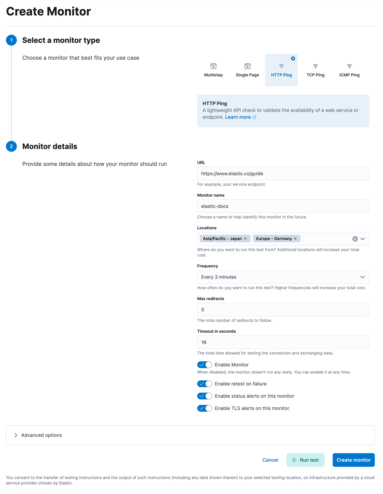

Configure lightweight monitors¶
import LightweightConfigCommon from ‘../transclusion/synthetics/reference/lightweight-config/common.mdx’ import LightweightConfigHttp from ‘../transclusion/synthetics/reference/lightweight-config/http.mdx’ import LightweightConfigIcmp from ‘../transclusion/synthetics/reference/lightweight-config/icmp.mdx’ import LightweightConfigTcp from ‘../transclusion/synthetics/reference/lightweight-config/tcp.mdx’
Monitor the status of network endpoints using the following lightweight checks:
HTTP: Monitor your website. The HTTP monitor checks to make sure specific endpoints return the correct status code and display the correct text.
ICMP: Check the availability of your hosts. The ICMP monitor uses ICMP (v4 and v6) Echo Requests to check the network reachability of the hosts you are pinging. This will tell you whether the host is available and connected to the network, but doesn’t tell you if a service on the host is running or not.
TCP: Monitor the services running on your hosts. The TCP monitor checks individual ports to make sure the service is accessible and running.
Lightweight monitors can be configured using either the
Synthetics UI¶
To use the UI, go to Synthetics in your Observability project to create and configure monitors.
For step-by-step instructions, refer to

Synthetics project¶
To use YAML files to create lightweight monitors in a Synthetics project, lightweight directory.
In each YAML file, define a set of monitors to check your remote hosts.
Each monitor item is an entry in a YAML list and begins with a dash (-).
You can define the type of monitor to use, the hosts to check, and other
optional settings.
The following example configures three monitors checking via the http, icmp, and tcp
protocols and demonstrates how to use TCP Echo response verification:
heartbeat.monitors:
- type: http
name: Todos Lightweight
id: todos-lightweight
urls: "https://elastic.github.io/synthetics-demo/"
schedule: '@every 1m'
- type: icmp
id: ping-myhost
name: My Host Ping
hosts: "myhost"
schedule: '@every 5m'
- type: tcp
id: myhost-tcp-echo
name: My Host TCP Echo
hosts: "myhost:777" # default TCP Echo Protocol
check.send: "Check"
check.receive: "Check"
schedule: '@every 60s'
There are some common monitor configuration options that are the same for all lightweight monitor types.
For a complete list, refer to
Each monitor type also has additional configuration options that are specific to that type. Refer to:
HTTP options ICMP options TCP options
The tcp and http monitor types both support SSL/TLS and some proxy settings.
Common options¶
You can specify the following options when defining a synthetic monitor in any location. These options are the same for all monitors. Each monitor type has additional configuration options that are specific to that monitor type.
HTTP options¶
The options described here configure Synthetics to connect via HTTP and optionally verify that the host returns the expected response.
Valid options for HTTP monitors include
ICMP options¶
The options described here configure Synthetics to use ICMP (v4 and v6) Echo Requests to check the configured hosts. On most platforms you must execute Synthetics with elevated permissions to perform ICMP pings.
On Linux, regular users may perform pings if the right file capabilities are set. Run
sudo setcap cap_net_raw+eip /path/to/heartbeat to grant Synthetics ping capabilities on Linux.
Alternatively, you can grant ping permissions to the user being used to run Synthetics.
To grant ping permissions in this way, run sudo sysctl -w net.ipv4.ping_group_range='myuserid myuserid'.
Other platforms may require Synthetics to run as root or administrator to execute pings.
Valid options for ICMP monitors include
TCP options¶
The options described here configure Synthetics to connect via TCP and optionally verify the endpoint by sending and/or receiving a custom payload.
Valid options for TCP monitors include
Data types reference¶
Values of configuration settings are interpreted as required by Synthetics. If a value can’t be correctly interpreted as the required type - for example a string is given when a number is required - Synthetics will fail to start up.
Boolean¶
Boolean values can be either true or false. Alternative names for true are
yes and on. Instead of false the values no and off can be used.
enabled: true
disabled: false
Number¶
Number values require you to enter the number without single or double quotes.
integer: 123
negative: -1
float: 5.4
String¶
In YAML, multiple styles of string definitions are supported: double-quoted, single-quoted, unquoted.
The double-quoted style is specified by surrounding the string with ". This
style provides support for escaping unprintable characters using \, but comes
at the cost of having to escape \ and " characters.
The single-quoted style is specified by surrounding the string with '. This
style supports no escaping (use '' to quote a single quote). Only printable
characters can be used when using this form.
Unquoted style requires no quotes, but does not support any escaping and can’t include any symbol that has a special meaning in YAML.
Duration¶
Durations require a numeric value with optional fraction and required unit.
Valid time units are ns, us, ms, s, m, h. Sometimes features based
on durations can be disabled by using zero or negative durations.
duration1: 2.5s
duration2: 6h
duration_disabled: -1s
Regular expression¶
Regular expressions are special strings that are compiled into regular expressions at load time.
As regular expressions and YAML use \ for escaping
characters in strings, it’s highly recommended to use single quoted strings when
defining regular expressions. When single quoted strings are used, the \ character
is not interpreted by YAML parser as an escape symbol.